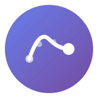

Open cursor intelligence infrastructure
Install the browser extension and start contributing cursor data to the public dataset.
Quick Start Guide →Learn about our privacy-first architecture and differential privacy guarantees.
Privacy Policy →Help build the future of cursor intelligence. Contributors welcome!
Contributing Guide →